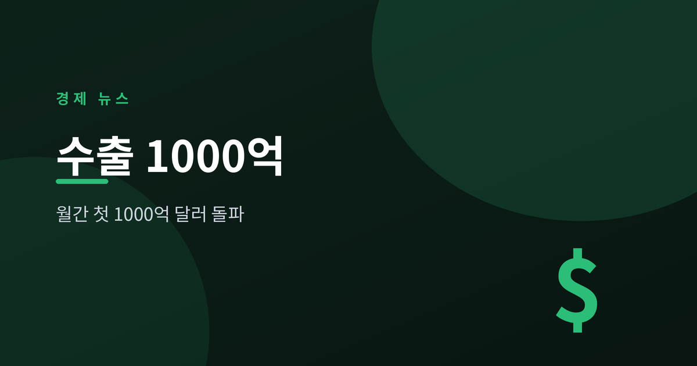
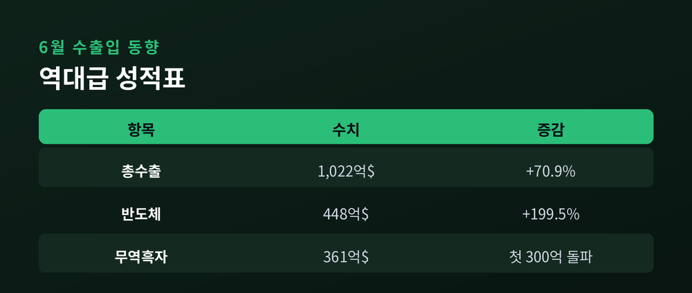
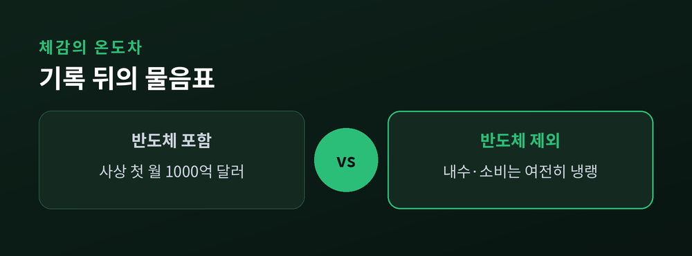
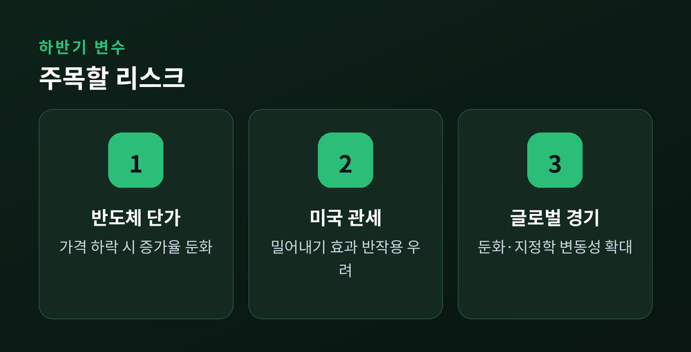

반도체가 끌어올린 '역대급 성적표'의 명암

산업통상부가 7월 1일 발표한 '6월 수출입 동향'에 따르면, 지난달 수출액이 1,022억 5천만 달러를 기록했습니다. 월간 기준으로 사상 처음 1,000억 달러를 넘어선 수치입니다. 독일·중국·미국에 이어 세계 네 번째 기록입니다. 숫자만 보면 화려하지만, 그 안을 들여다보면 짚어야 할 대목이 적지 않습니다.
6월 수출은 1년 전보다 70.9% 급증했습니다. 견인차는 단연 반도체였습니다. 반도체 수출은 448억 2천만 달러로 전년 동월 대비 199.5% 늘었고, 월 기준 처음으로 400억 달러 선을 넘었습니다. 인공지능(AI) 인프라 투자 확대로 메모리 수요가 급증하고 단가가 뛴 결과입니다. 고대역폭메모리(HBM) 수출은 126억 8천만 달러로 171% 증가했습니다. 그 덕에 6월 무역수지는 361억 5천만 달러 흑자로, 이 역시 처음으로 300억 달러 벽을 넘었습니다. 상반기 누적 무역흑자는 1,383억 달러로 역대 최대입니다.

기록은 분명 반갑습니다. 다만 성장의 무게중심이 반도체 한 곳에 지나치게 쏠려 있다는 점이 문제로 지적됩니다. 반도체를 빼면 전체 수출 그림은 사뭇 달라집니다. 일부 전문가는 이번 실적에 미국의 관세 강화를 앞두고 물량을 미리 앞당겨 실어낸 '밀어내기' 효과가 섞여 있다고 봅니다. 통계상 호황이 실제 체감 경기와 어긋난다는 지적도 나옵니다. 실제로 부동산 침체가 길어지며 내수 소비는 좀처럼 살아나지 않고 있습니다. "수출은 사상 최대인데 우리 경제는 정말 호황인가"라는 물음이 언론에서 반복되는 이유입니다. 수출 한 축만 뜨겁고 나머지는 미지근한, 이른바 불균형 회복의 전형적 모습입니다.

하반기 관전 포인트는 크게 둘입니다. 첫째는 반도체 단가입니다. 이번 호실적의 상당 부분이 가격 상승 덕이었던 만큼, 메모리 가격이 꺾이면 수출 증가율도 빠르게 둔화될 수 있습니다. 둘째는 미국의 관세 정책입니다. 대미 통상 환경이 강화되면 상반기의 밀어내기 효과가 하반기 부담으로 되돌아올 수 있습니다. 글로벌 경기 둔화와 지정학 리스크도 변동성을 키우는 요인입니다. 정부와 시장은 이번 기록을 '정점'이 아니라 '변곡점'으로 보고 대응할 필요가 있습니다. 반도체 편중을 완화하고 수출 품목을 넓히는 과제가 하반기 화두로 남습니다.

숫자는 역대 최고를 가리키지만, 그 뒤에는 '얼마나 오래 갈 수 있느냐'는 질문이 함께 걸려 있습니다. 신기록에 취하기보다, 반도체 한 다리에 실린 무게를 어떻게 분산할지가 하반기 한국 경제의 진짜 시험대가 될 것입니다.
※ 이 글은 정보 제공을 위한 해설이며 투자 권유가 아닙니다.
참고 출처: 산업통상부 '6월 수출입 동향'(정책브리핑), Korea Herald, 국민일보